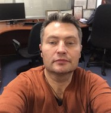

- etcargo_chief@mail.ru
- 952-275-03-44
- /alex-katenin
- Резюме
- etcargo_chief_1
- Download: k4t3n1n.netlify.app
k4t3n1n082021.netlify.app (NEW!!!) - killeralex

Alexandre Katenin
Engenheiro de software sênior, Analista de sistemas
1975
SPIN 6877-5169, ORCID 0000-0001-9363-4886
h = 2 (06.12.2018)
Contatos
Competências
- АСУ ТП (автоматизация ТТД НП)
- АСУВ, моделирование боевых действий, СППР
- Математические методы в судовождении
- НИОКР
Pilha de tecnologia
- DevOps: PIPELINE: JIRA, GitLab, Jenkins, QA
- TS: Техническая поддержка (автоматизированная система учета нефтепродуктов, JIRA Service Desk)
- DB: Администратор БД (ORA)
- APP: Администратор корпоративных приложений (интеграция на IBM MQ, сервисы сбора и обработки данных (OPC и др))
- BI, SA: Cистемный аналитик (автоналив, оперативный и коммерческий учёт нефтепродуктов, товарно-транспортные операции, двухчасовые оперативные данные)
- SoftDev: Delphi, SmartGit
- Test Engineer, AT: TestComplete
Habilidades
I Grau acadêmico
- 2004 Doutorado em Ciências da Engenharia, 27.05.2004 г. (КТ №143946 от 25.03.2005)
II Línguas estrangeiras
- – português, А2 (2021)
- – inglês (Falo fluentemente, programa acadêmico 2005 - 2007, sem certificado; reciclagem profissional no âmbito do programa «Estudos de Tradução» 2010);
- – japonês (entendo, posso me explicar, não sei escrever muito; Level 4 of the Japanese-Language Proficiency Test, 02.02.2008, № 4A221642, 07*7270101-40001)
III INFORMAÇÕES ADICIONAIS
- 2018 59 публикаций, из них 6 в ФИПС (РОСАПО) (5 программ и 1 ПМ) и 6 патентов – на 06.12.2018 г, см. Форма 16, индекс Хирша 2
- 2008 Победа в ежегодном конкурсе на лучшую НИР 2007 г. в номинации «Научно-исследовательские работы в области навигационного обеспечения боевых действий ВМФ» (НИР «Блокпост», приказ начальника ГНИНГИ МО РФ №100 от 06.05.2008)
- 1997 Медаль «За лучшую научную студенческую работу» (Министерство общего и профессионального образования РФ, 27.12.1997) (ведомственная, по итогам открытого конкурса на лучшую научную работу студентов по естественным, техническим и гуманитарным наукам в вузах РФ)
IV Reciclagem profissional
- CCNA Segurança de rede Cisco, 04.12.2021 – 25.12.2021
- CCNA 7.0 Roteamento e comutação Cisco, 12.09.2021 – 28.11.2021
- Seminário «Exemplo de uso da Web Storage API», 26.08.2021
- Português, A2.1, 04.10.2021–20.12.2021
- Português, A1.2, 25.05.2021–06.08.2021
- Português, A1.1, 02.02.2021–16.04.2021